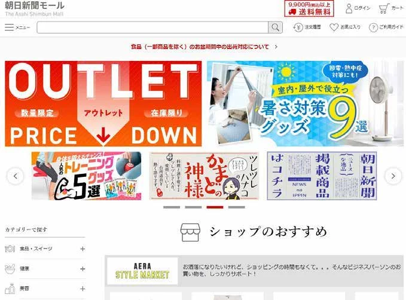
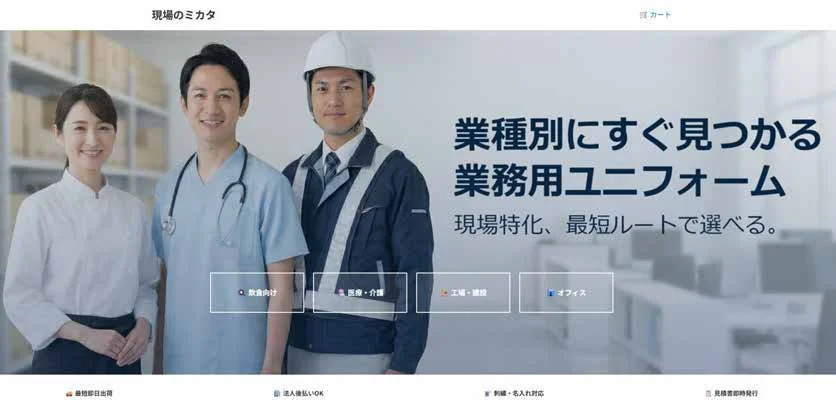
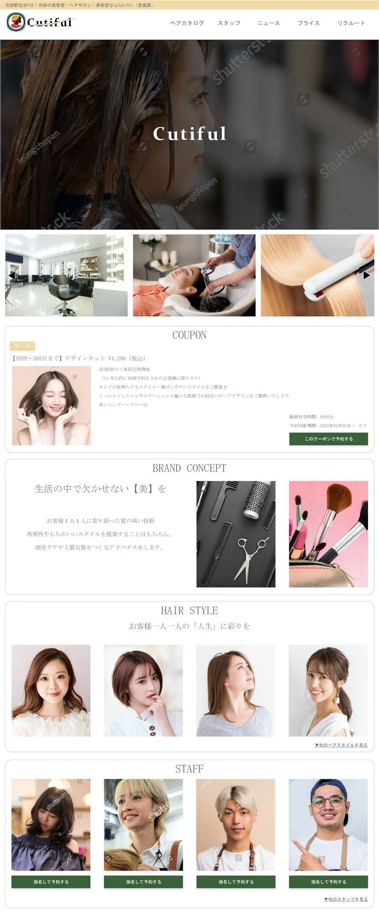

WEB DIRECTOR / PORTFOLIO 2026
つくる視点。
育てる視点。
その間を、つなぐ。
制作から運用まで、一貫した経験を力に。
課題を整理し、使いやすさと成果につながるWebへ。
中川 育謙 IKUNORI NAKAGAWA
制作実績を見る ↗DESIGN
DIRECTION
DEVELOPMENT
22YEARS IN
WEB INDUSTRY
01 / ABOUT
制作を知るから、
つながる進行ができる。
コーダー、Webデザイナー、Webディレクター。複数の職種を経験し、制作から運用まで一貫して携わってきました。
IT・インターネットサービス業界の顧客向けWebページデザイン、社内システム、他社向けパッケージ型サービスの制作を経験。1日の最大利用者数が100万人以上のサービスも担当しました。
ディレクションでは100人月〜500人月の案件や、受注単価1,000万円未満の案件を担当。主任・リーダーやクリエイティブディレクターへの報告を行い、最大5〜9人の部下を1〜3年間マネジメントした経験もあります。
これまでの知見を生かしながら、Web系人材としてさらに成長し、後進の育成にも力を入れていきたいと考えています。
担当案件
ロフト / 楽天 / 朝日新聞社
トイカード / その他
得意分野
ECサイト / CMS導入
Webディレクション / UI改善 / 外注管理
使用ツール
Figma / Adobe XD
Photoshop / Illustrator
ChatGPT / Gemini
03 / SKILLS
現場で積み重ねた、実務スキル。
PDFに記載された自己評価（5段階）
Webディレクション●●●●●
要件定義●●●●●
ワイヤーフレーム●●●●●
CMS運用●●●●●
EC運営●●●●●
HTML / CSS●●●●●
Figma●●●●●
Photoshop●●●●●
Illustrator●●●●●
AI活用（ChatGPT / Gemini）●●●●●
04 / SELECTED WORKS
課題に向き合い、形にする。
実案件から自主制作まで。担当範囲と、その先にある工夫。
概要
ECサイトの新規コンテンツ／更新・修正ディレクション。
課題
期日を厳守した店舗連動型のイベントページの作成・更新。
ターゲット
既存顧客およびコラボイベントによる新規顧客の獲得。
工夫・改善策
メーカー提供素材の遅延を想定し、汎用性の高いデザインレイアウトおよびカラー設定を意識してラフデザインを作成。新規顧客でもページ内およびサイト内の回遊性を高められるようUIを修正。
成果・実績
ディレクションを担当し、新規顧客の獲得および売上向上に貢献。昨年あるいは前回からの売上向上／微増レベルで維持。
主な担当カテゴリー
キャラクター・バラエティ雑貨 / ファッション＆トラベル雑貨 / ホーム＆キッチン
制作画面をさらに見る 3 IMAGES ＋
出典：ポートフォリオPDF 6–7ページ
概要
モール内の大手企業向けLP作成ディレクション。新規顧客獲得施策に参加。
課題
「楽しい」「自然」を前面に出した構成と、アーティスト・緑黄色社会の写真を利用した期間限定商品のPR。
ターゲット
既存顧客およびアーティストタイアップを入口とした新規顧客の獲得。
工夫・改善策
コンテンツの優先順位が納期直前まで決定しなかったため、順序変更へ即時対応できるマークアップ体制を構築。導線の間口を広げるため、同メーカーの他キャンペーンとの相互リンクエリアを設置。
成果・実績
CMとのタイアップやポイントキャンペーンの効果もあり、若い世代のユーザーの獲得につながりました。
制作画面をさらに見る 1 IMAGES ＋
出典：ポートフォリオPDF 8–9ページ

EC / CMS / UI改善
株式会社朝日新聞社
探しやすさと読みやすさを、ECの体験に。
ECサイトリニューアル
担当範囲
ページレイアウト（ワイヤーフレーム）/ コンテンツ企画 / 会議議事録 / デバッグ / 外注進捗管理 / 配下のWebShop
掲載URLを見る ↗（別タブ）課題
新規での再構築にあたり、エビスマートのCMSを使い、内製化による販売経路を構築する。
工夫・改善策
読みやすい文字サイズを指定。1ページあたりのアイテム数を減らして写真を大きくし、その分カテゴリーを細分化。検索結果の絞り込みを容易にし、離脱率を下げることを意識。
成果・実績
カテゴリ再設計 / 検索導線改善 / シニア向けUI改善 / 売上向上施策に寄与。
制作画面をさらに見る 1 IMAGES ＋
出典：ポートフォリオPDF 10–11ページ
PROJECT 04 / GENBA NO MIKATA
自主制作
B2B EC / UI・UX / 実装
現場のミカタ
大量発注の負荷を減らす、マトリクスUI。
現場特化型 B2BユニフォームEC
担当範囲
UI/UXデザイン / フロントエンド実装 / AIアセット制作
概要
業務フローを改善するUI/UXデザインとフロントエンド実装。メインビジュアルは信頼感と清潔感を重視。
課題
法人向けユニフォームECでは、大量発注時の入力負荷が高い。
工夫・改善策
サイズ・数量をまとめて入力できるマトリクスUIを導入し、発注工数と入力ミスの削減を目指す。AI（Gemini / Nano Banana）を活用し、刺繍のディテールまで再現した高精細なアセットを制作。
実装
HTML / CSS / JavaScript。ポートフォリオとしてlocalStorageを利用し、サーバーレスでページ間のデータ遷移を実現。カート内容をそのまま見積書として整形し、ブラウザの印刷機能（@media print）でA4 PDFを出力可能。
位置づけ
自主制作によるUI・実装の提案。工数・入力ミス削減は設計上の狙いで、実運用の計測値ではありません。
制作画面をさらに見る 3 IMAGES ＋
出典：ポートフォリオPDF 12–14ページ
概要
リリースまでの制作進行を担当。リリース後から券売システム導入までの期間限定でコンテンツ更新も担当。
課題
既存サイトをリニューアルし、記事投稿など定期更新箇所をCMS化して内部運用化を進める。
ターゲット
子育て世代、自治体への「おもちゃ券」のPR。
工夫・改善策
デッドリンクの多い既存サイトについて全ページリストを作成。クライアントに取捨選択を依頼し、サイトマップを見直し。一方通行のページも整理し、利用可能店舗を検索しやすく再構築。
成果・実績
社内での更新範囲が拡大。小規模な更新でも費用がかかっていた部分のコスト削減に貢献。
制作画面をさらに見る 1 IMAGES ＋
出典：ポートフォリオPDF 15–16ページ
PROJECT 06 / HAIR SALON
自主制作
サービスサイト / デザイン
架空のヘアサロン
サロンの空気感と、予約へのスムーズな導線。
Adobe XD / 作業時間：2日
担当範囲
TOPページデザイン
課題
ファーストビューだけで店舗のイメージが想像できるデザインにする。
コンセプト
予約導線を優先し、予約ボタンをファーストビューへ配置。スマホで3タップ以内に予約可能な設計。フォントサイズ・配色の読みやすさも意識。
工夫・改善策
来店に関する情報以外の固定情報は下層ページへ。TOPには写真と更新頻度の高い情報を掲載し、縦長になりすぎない構成。jQueryによるスクロール時のフェードインを想定。
制作環境
Adobe XD / 作業時間：2日 / 写真：フリー素材（サンプル含む）。
制作画面をさらに見る 2 IMAGES ＋
出典：ポートフォリオPDF 17–18ページ
コンセプト
動きのある、見ていて感動するデザイン。仮のブランド名を「LUMÉA」とし、淡いピンク・ベージュ・白・淡いブルーで、やわらかく清潔感のある印象へ。大人っぽさと高級感を加えた世界観を目指しました。
ファーストビュー・商品訴求
大きな女性のビジュアルを配置。保湿系スキンケアを扱うブランドであることを、商品訴求セクションで明確にする狙い。
CONCEPT / PRODUCTS
ブランドの考え方を文章で伝え、信頼感につなげる設計。商品カードには用途が分かる説明文を追加。
HOW TO USE / INGREDIENTS
毎日のスキンケアや正しい使い方の検索意図を意識。成分情報をTOPページにも掲載する構成。
BEFORE / AFTER / REVIEWS
効果を断定しない表現を意識。薬機法・景表法に配慮する方針。レビューでは「乾燥が気になる季節」など検索意図に沿う本文を想定。
SKIN DIAGNOSIS / NEWS
肌診断には悩みキーワードを配置し、診断結果から乾燥肌・毛穴・くすみケアなどの商品一覧へ誘導する設計。NEWSは定期的な更新を想定。
補足
SEOに関する説明はPDFに記載された設計意図です。検索順位・成果を保証するものではありません。架空ブランドのデザイン案です。
制作画面をさらに見る 2 IMAGES ＋
出典：ポートフォリオPDF 19–20ページ

フラワーショップ / LP
FLEURIA
花のある暮らしを、やさしく上質に。
個人 / 法人 / 祝賀 / イベント
担当範囲
フラワーショップ TOP・LPデザイン
掲載URLを見る ↗（別タブ）コンセプト
「花のある暮らしを、やさしく上質に。」淡いベージュ・ピンク・グリーンを基調に、余白を広く取ったナチュラルで上品なデザイン。花を贈る時間や気持ちまで伝わるブランドサイトを意識。
導線設計
個人向け・法人向け・祝賀・イベントなど用途別に導線を整理し、商品を探しやすい構成に。柔らかな配色、大きな写真、十分な余白で上質感を表現。
画面効果
スクロールに合わせて写真やテキストがゆっくりフェードイン。商品カードのホバー拡大や浮き上がり、花びらや写真の緩やかな動きで、静かな中にも印象的な演出を想定。
継続して訪れたくなる仕組み
「今日の花言葉」は日付に合わせて内容が変わる想定。読み物コンテンツを加え、販売だけでなく継続して訪れたくなるサイトを目指しました。
制作画面をさらに見る 2 IMAGES ＋
出典：ポートフォリオPDF 21–22ページ
実案件の画像は担当時の制作画面です。掲載URLの現在の表示とは異なる場合があります。自主制作は架空のサービス・デザイン案を含みます。
05 / WHAT I BRING
制作とビジネスの間に立ち、
チームの前進を支える。
- 制作会社とクライアントの橋渡しができる
- コーディングを理解したディレクションができる
- CMS導入経験がある
- ECサイト運営経験がある
- AIを活用した制作効率化ができる
もう一度、制作実績を見る ↗